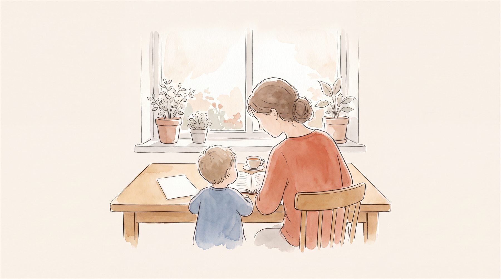

아이의 진로·기질·지능 검사와 양육에 대해, 부모님이 가장 많이 묻는 질문에 임상심리전문가 안계훈이 하나씩 답합니다. 검사를 받기 전에도, 결과지를 받은 뒤에도 도움이 되도록 70편을 준비했습니다.

우리 아이에게 어떤 검사가 맞는지, 정식 검사와 무료 테스트는 뭐가 다른지부터.
AI 시대, 좋아하는 것을 ‘직업 이름’보다 ‘동사’로 읽습니다.
현실형·탐구형·예술형… 우리 아이는 어디에 끌릴까요.
스트롱은 홀랜드의 흥미 6유형 위에 지어진 검사입니다. 아이 나이에 맞게 고르는 법.
좋아하는 게 없는 아이는 없습니다.
막을 일도, 다 진로로 볼 일도 아닙니다.
흥미는 타고나는가, 좋아하면 잘하는가, 좋아하는 게 곧 직업인가. 부모가 거의 다 빠지는 세 가지 오해.
지금의 능력은 확정이 아닙니다. 흥미는 지루한 연습을 견디게 하는 힘이에요.
직업 이름은 사라져도 그 안의 동사는 남습니다. 아이의 변덕이 사실은 일관성이었던 이유.
무난하게 잘하는 능력일수록 먼저 대체됩니다.
취미를 인질로 잡으면 아이는 공부를 더 미워합니다. 둘을 적으로 만들지 마세요.
마주 앉아 “얘기 좀 하자”가 최악인 이유. 아이 입을 여는 질문은 따로 있습니다.
추천 직업 목록은 정답 명단이 아니라 대화의 실마리입니다. 결과지에서 진짜 봐야 할 것.
위험한 건 의견 차이가 아니라 아이 앞에서의 충돌입니다. 결론 말고 규칙에 먼저 합의하세요.
형제의 흥미가 갈리는 건 자연스럽습니다. 공평함은 똑같이 주는 것으로 지켜지지 않아요.
손과 몸으로 세상을 만나는 아이. 만들기·고치기·움직이기가 이 아이의 동사입니다.
끝없이 “왜?”를 묻는 아이. 캐묻기·알아내기·따져보기가 이 아이의 동사입니다.
머릿속 상상을 꺼내는 아이. 표현하기·상상하기·짓기가 이 아이의 동사입니다.
사람이 곧 세계인 아이. 돕기·가르치기·잇기가 이 아이의 동사입니다.
앞장서서 길을 여는 아이. 이끌기·설득하기·시작하기가 이 아이의 동사입니다.
질서를 세우고 관리하는 아이. 정리하기·계획하기·챙기기가 이 아이의 동사입니다.
타고난 기질은 바꾸는 게 아니라 맞추는 기준입니다. 우리 아이가 어떤 아이인지 읽는 글.
산만한 게 기질일까요? 검사가 필요한 신호.
자극추구·위험회피·사회적 민감성·인내력. 높고 낮음에 좋고 나쁨은 없습니다.
네 축의 조합이 그리는 열 가지 대표 모습.
기질에서 온 행동과 살펴야 할 신호를 가르는 기준.
타고나는 기질과 길러지는 성격, 남에게 비치는 인격. 세 단어의 차이를 알면 바꿀 것과 이해할 것이 나뉩니다.
타고난 기질은 잘 변하지 않습니다. 달라지는 건 기질을 다루는 성격의 힘이에요.
나이대별로 유아용·아동용·청소년용이 따로 있고, 어릴수록 부모가 관찰해 답합니다.
유전의 우연, 같은 집이어도 다른 환경, 그리고 형제간 차별화. 형제가 다른 건 자연스러운 일입니다.
아이를 답답해하는 그 마음의 절반은 부모님 기질에서 옵니다.
호기심과 신중함을 함께 지닌 아이. 두 마음이 부딪치면 시작 자체가 어려워집니다.
맡은 일을 빈틈없이 하고 친구의 힘듦을 먼저 알아채는 아이. 다만 실패가 두려워 도전을 접기 쉽습니다.
남들이 주저할 때 가장 먼저 뛰어드는 아이. 막기만 하지 말고 풀 곳을 만들어 주세요.
넓은 관계보다 깊은 관계가 힘의 원천인 아이. 친구가 적은 게 문제가 아닙니다.
모험심과 사람을 모으는 매력을 함께 지닌 아이. 인정만 좇다 자기를 잃지 않게.
남의 평가에 흔들리지 않고 한 분야를 깊이 파는 아이. 끌어내지 말고 초대받아 들어가세요.
감정의 폭이 큰 아이. 변하지 않는 두세 가지를 정해 두면 마음이 가라앉습니다.
키우기 수월한 아이. 다만 그 순응 뒤에 눌러 둔 마음이 있습니다.
감정 호소는 안 닿습니다. 규칙과 이유를 명료하게 설명해 주세요.
끈기는 그대로 두되, 쉬는 법과 방향 바꾸는 법을 함께 알려 주세요.
검사는 아이만 받는 게 아닙니다. 부모의 기질과 양육태도를 함께 읽습니다.
아이를 답답해하는 마음의 절반은 부모 기질에서 옵니다.
이상적 점수는 만점이 아니라 요인마다 다른 적정 구간의 안내선입니다. 진짜 기준은 우리 아이와의 궁합이에요.
다른 게 문제가 아니라 조율되지 않는 게 문제입니다. 두 사람이 한 팀이 되는 세 가지 약속.
자책은 과거를 향하고, 책임은 다음 행동을 향합니다. 아이에게 필요한 건 뒤쪽이에요.
중요한 건 부모의 수가 아니라 어떤 연결이 있느냐입니다. 연결망 하나, 그리고 부모 자신 지키기.
찾아보는 힘과 걱정하는 힘이 함께 큰 부모. 결함이 아니라 성향입니다.
기준이 분명하고 세심한 부모입니다. 그 눈이 늘 켜져 있으면 아이가 눈치를 보기 시작해요.
추진력 있는 부모. 아이가 그 속도를 못 따라올 수 있어요.
집을 가장 편안한 곳으로 만드는 부모. 다만 둥지가 너무 편하면 나가지 않게 됩니다.
응원이 큰 부모. 그 응원이 지나치면 아이가 부모 기대를 사는 사람이 됩니다.
흔들리지 않는 부모. 사랑은 표현되지 않으면 아이에게 닿지 않습니다.
공감이 깊은 부모. 다만 기분에 따라 기준이 흔들리면 아이가 불안해집니다.
아이를 지켜 온 부모. 다만 위험하지 않은 실패는 허용해 주셔야 합니다.
자율을 주는 부모. 그 자율이 아이에겐 무관심으로 읽히기도 해요.
포기하지 않는 부모. 다만 아이에게도 같은 끈기를 요구하면 아이가 꺾입니다.
IQ 숫자 하나가 아이를 다 말해주지 않습니다. 다섯 가지 힘으로 읽는 강점.
언어·시공간·추론·기억·속도로 읽는 머릿속.
지능 점수는 한 점이 아니라 범위입니다. 평균 뒤에 숨은 다섯 힘의 균형을 읽는 법.
지능검사는 등수를 매기는 도구가 아니라, 아이를 어떻게 도울지 알기 위한 검사입니다.
암호 같은 결과지 첫 페이지를 읽는 네 가지 도구 — 분류표·백분위·신뢰구간·다섯 지표.
이해는 하는데 붙들어 두질 못합니다. 게으른 게 아니라 힘의 균형이 다른 거예요.
배운 대로는 잘하는데 처음 보는 문제에서 멈춥니다. 노력이 부족한 게 아니에요.
말로 안 나오니 몸이 먼저 나갑니다. 난폭한 게 아니라 말이 막힌 거예요.
생각은 좋은데 꺼내는 통로가 좁습니다. 실력이 없는 게 아니라 안 보이는 거예요.
말로는 척척인데 손과 몸으로 하면 얼어붙습니다. 게으른 것도 겁쟁이도 아니에요.
방금 들은 걸 잊는 건 성의 문제가 아닙니다. 붙들어 두는 힘이 약한 거예요.
아는데 느린 겁니다. 느린 것과 못하는 것은 다릅니다.
빨리 끝내는 게 목표가 되면, 생각할 시간이 사라집니다.
특징이 없는 게 아닙니다. 지능검사가 답할 수 있는 질문이 아닐 뿐이에요.